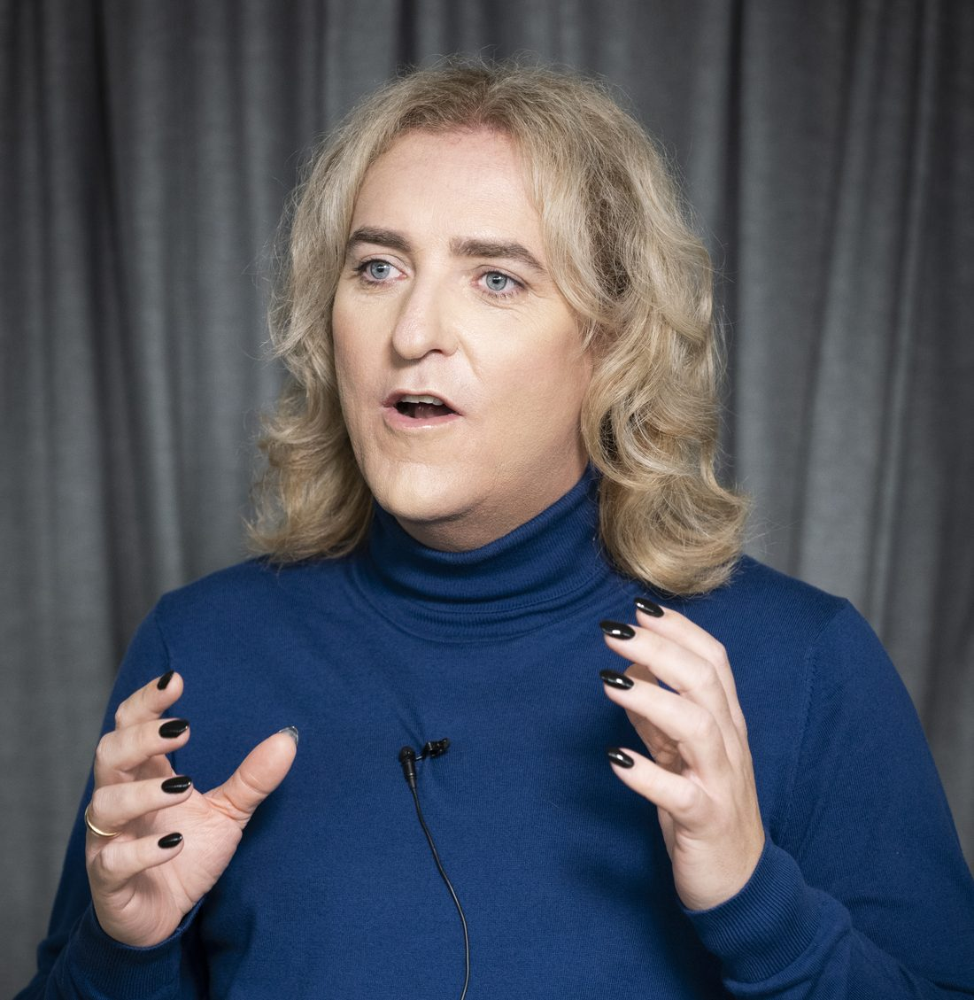
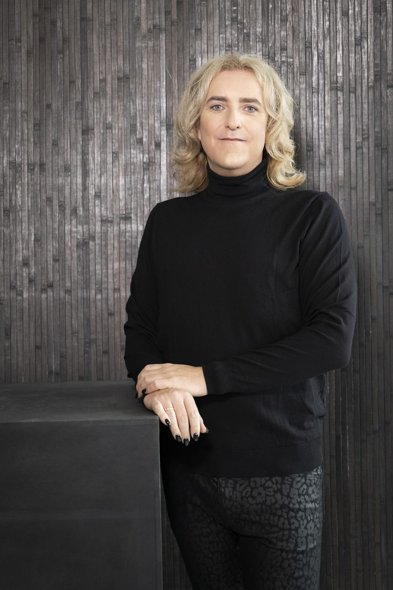
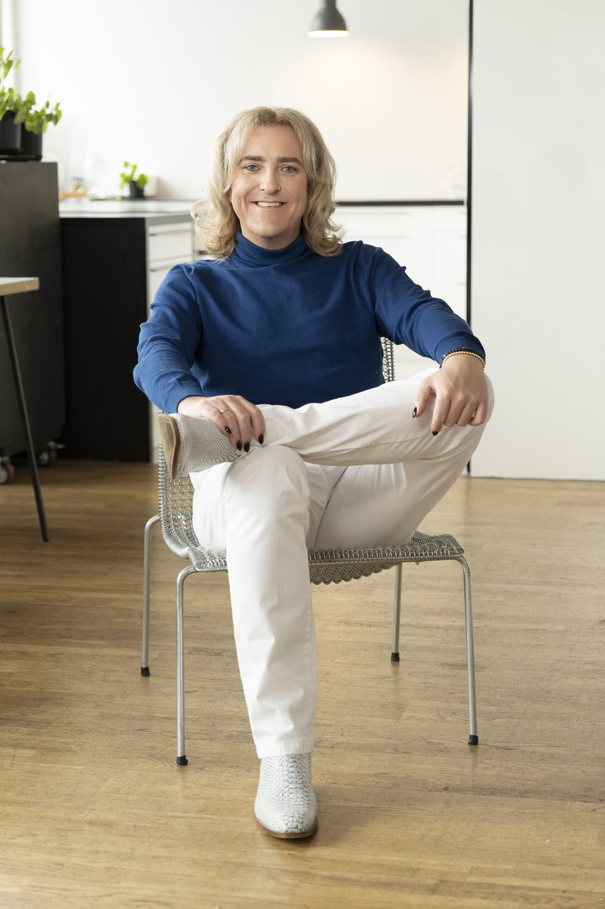

Fast kake
Distributiv forhandling
Der den ene vinner mer, taper den andre tilsvarende – klassisk pruting om pris. Her avgjøres resultatet av ankere, rammer og innrømmelser i riktig rekkefølge, alltid mot motytelser.
Forhandling er et håndverk
Forhandling er ikke medfødt talent, maktspill eller manipulasjon. Det er et strukturert, forskningsbasert håndverk – og det kan læres av alle. Her deler Jan-Erik Sandberg verktøyene fra tre tiår ved forhandlingsbordet.
Utgangspunktet
De fleste tror forhandling handler om å vinne. Om å dominere, bløffe eller presse motparten til å gi seg. Det gjør det ikke. Profesjonell forhandling er strukturert samarbeid om gode avtaler – en prosess der begge parter kan reise seg fra bordet med noe som er verdt å gjennomføre.
Den profesjonelle forhandleren møter forberedt: med en skriftlig plan, et bevisst forhold til egne alternativer, og et klart bilde av hva et godt resultat faktisk er. Ikke for syns skyld – men fordi forberedelse er den største enkeltfordelen du kan gi deg selv før du setter deg ved bordet.
Myten om den fødte forhandleren er nettopp det – en myte. Hver eneste ferdighet som gjør deg til en god forhandler, kan læres.
Kartet
Det første du må vite, er hvilken forhandling du faktisk står i. Alt etterpå avhenger av det.
Fast kake
Der den ene vinner mer, taper den andre tilsvarende – klassisk pruting om pris. Her avgjøres resultatet av ankere, rammer og innrømmelser i riktig rekkefølge, alltid mot motytelser.
Voksende kake
Partene har flere interesser enn selve prislappen, og verdien kan økes før den fordeles. Her lykkes den som leter frem interessene bak kravene – ikke den som roper høyest.
Modeller som Dual Concern og Thomas-Kilmanns fem konfliktstiler hjelper deg å plassere både deg selv og motparten før dere setter dere ved bordet.
Menneskene
Hvem er du ved bordet – og hvem sitter på den andre siden?
Typen
Vil bevare relasjonen for enhver pris og gir innrømmelser for å unngå konflikt. Blir godt likt ved bordet – og betaler som regel for det i resultatet.
Typen
Ser forhandling som en viljekamp som skal vinnes. Kan vinne enkeltrunder, men ødelegger relasjoner og lar verdier begge kunne fått med seg, bli liggende igjen på bordet.
Forbildet
Skiller sak fra person, leter etter interessene bak kravene og forankrer løsningen i objektive kriterier. Myk mot menneskene, hard mot saken – det er dette håndverket handler om.
Verktøykassen
Forhandlingsfaget er større enn de fleste aner, og det hviler på solid forskning – fra Harvard-miljøet rundt Fisher og Ury til Kahneman og Tverskys atferdsøkonomi. Her er tolv nedslag i faget.
Forberedelse
Et skriftlig dokument du lager før forhandlingen: hva du skal oppnå, hvilke rammer du har, hva alternativene dine er, og hvem som gjør hva ved bordet. Målene formuleres konkret og målbart – det som står på papir, står stødigere under press.
Forberedelse
Tre spørsmål som avgjør styrken din: Hva er ditt beste alternativ hvis avtalen ryker (BATNA)? Hva er det verste utfallet (WATNA)? Og hvor overlapper partenes rammer, slik at en avtale i det hele tatt er mulig (ZOPA)? Svarene forteller deg når du skal si ja – og når du skal gå.
Forskning: Fisher og Ury, Harvard Negotiation Project
Metoden
En metode i fire deler: skill sak fra person, let etter interessene bak kravene, finn løsninger begge tjener på – og la objektive kriterier som takst, markedspris eller presedens avgjøre der dere står fast.
Forskning: Fisher og Ury, «Getting to Yes»
Psykologien
Det første tallet som nevnes, drar hele resultatet mot seg – selv når tallet er urimelig. Derfor lønner det seg ofte å legge det første budet, godt forberedt, og å ha en plan klar for å nøytralisere motpartens anker når de rekker det først.
Forskning: Tversky og Kahneman (1974)
Kjernen
Posisjonen er kravet motparten stiller. Interessen er grunnen bak kravet. To parter kan stå steilt på hver sin posisjon og likevel ha interesser som lar seg forene – finner du dem, kan avtalen romme langt mer enn prisen.
Ved bordet
Åpne, kalibrerte spørsmål – «hvordan skal vi få til det?» – får motparten til å tenke høyt sammen med deg. Speiling, å gjenta de siste ordene, holder samtalen i gang. Og etikettering, å sette ord på det motparten føler, senker temperaturen i rommet.
Forskning: Lieberman m.fl. (2007): å sette ord på følelser demper aktiviteten i amygdala
Ved bordet
Rapport er arbeidsrelasjonen som får informasjon til å flyte: oppmerksomhet, positivitet og koordinasjon. I praksis handler det om små grep – matche energinivået, vise at du følger med – som gjør motparten trygg nok til å dele.
Forskning: Tickle-Degnen og Rosenthal (1990); van Baaren m.fl. (2003)
Rytmen
Press får de fleste til å snakke mer og tenke mindre. Den profesjonelle gjør det motsatte: senker tempoet når det strammer seg til, og tåler stillheten. Den som ikke holder den ut, gir gjerne noe fra seg for å fylle den.
Psykologien
Innrømmelser gis i avtagende steg, og aldri uten motytelse – ellers lærer motparten at det lønner seg å vente. Og fordi tap oppleves omtrent dobbelt så sterkt som en tilsvarende gevinst, betyr innpakningen av et tilbud nesten like mye som innholdet.
Forskning: Kahneman og Tversky, prospektteori
Teamet
Forhandler dere flere sammen, trenger laget tydelige roller – hvem leder, hvem lytter, hvem regner – og faste pauser for å samkjøre seg underveis. De største tabbene skjer nemlig ikke overfor motparten, men på egen side av bordet.
Forskning: Brett, Friedman og Behfar (2009), studie av 45 forhandlingsteam
Avslutningen
Avtaler lukkes med prøveavslutninger – «hvis vi løser X, er vi da enige?» – og en oppsummering som gjør enigheten uttrykkelig før noen forlater rommet. Harde pressteknikker hører hjemme i bilbutikken; i store avtaler virker de mot sin hensikt.
Forskning: Rackham, studie av over 35 000 salgssamtaler
Etterpå
Hva som oppleves tillitvekkende, direkte eller frekt, varierer mellom kulturer – og en avtale som er umulig i dag, kan være moden om tre måneder. Å lese både kulturen og tidspunktet er en del av håndverket, og jobben er ikke ferdig før avtalen er gjennomført.
Forskning: Erin Meyer, «The Culture Map»; Zartmans modenhetsteori

Fra scenen
Jan-Erik holder foredrag og utvikler kurs om forhandling – fra konferansescener i teknologimiljøene til ledergrupper som vil gjøre bedre avtaler. Alltid praktisk, alltid forankret i forskning, og alltid med verktøy publikum kan ta i bruk dagen etter. Bak ligger bred erfaring fra scener i et stort antall land – med gjennomgående gode tilbakemeldinger.
Book et foredragPriser
Forberedelse eller gjennomføring – som rådgiver i kulissene eller ved bordet.
3 750 krper time
90–120 minutter, tilpasset publikum og bransje.
43 450 krfast pris
Foredrag og praktisk trening for grupper som vil gjøre bedre avtaler.
174 900 krfast pris
Faktureres for reise til og fra oppdrag.
750 krper time
Alle priser er eks. mva. Timer faktureres per påbegynte halvtime.
Samfunnsnytte
For mindre interesseorganisasjoner som arbeider for positive endringer i samfunnet, og for aktører i lokalpolitikken, gjør jeg som regel både bistand og foredrag til kraftig reduserte priser – eller gratis.
Diskresjon
Alle oppdrag og henvendelser behandles konfidensielt, og foredrag legges aldri ut på sosiale medier uten at det er uttrykkelig avtalt. De fleste som tar kontakt, ønsker nettopp diskresjon.

Om
Jan-Erik Sandberg er forfatter, kursutvikler og etterspurt foredragsholder med tre tiår med erfaring fra forhandlingsbordet: kjøp og salg av programvare, tjenester og maskinvare – i både privat og offentlig sammenheng – samt partneravtaler og et stort antall ansettelser.
Erfaringen spenner videre fra investorsamtaler, styrearbeid og lederroller – fra små utviklingsmiljøer til toppledelsen i et internasjonalt børsnotert teknologiselskap representert i 20 land – til forhandlinger om kjøp og salg av selskaper, i domener fra avansert robotikk til politi og rettsvesen.
I dag deler hen håndverket gjennom videokurs, foredrag og skriving – med én rød tråd: forhandling er ikke personlighet, det er metode.

Kontakt
Foredrag, kurs eller en samtale om forhandling – ta kontakt, så finner vi ut av det.
Jeg svarer raskest på e-post. Fortell kort hva det gjelder, så hører du fra meg.
Send e-postAnonym besøksstatistikk?
Jeg vil gjerne bruke Google Analytics til å forstå hvor mange som besøker siden. Ingenting lastes eller lagres før du eventuelt samtykker, og du kan når som helst ombestemme deg via «Informasjonskapsler» nederst på siden.